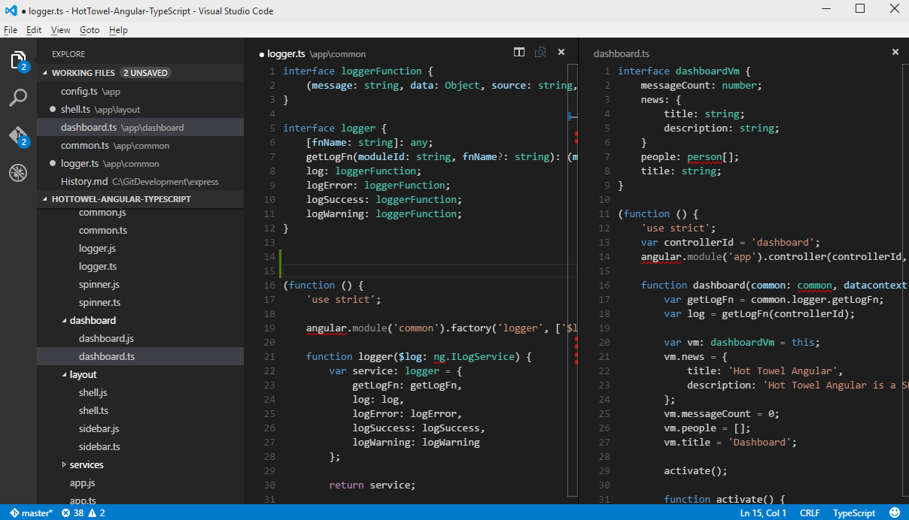
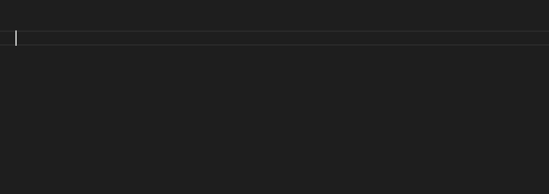
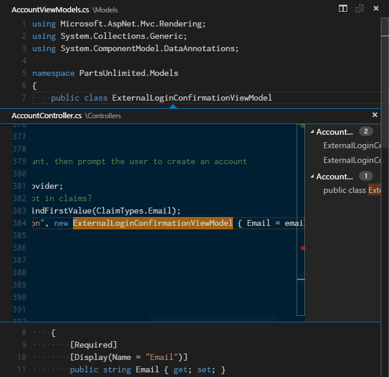

Angular2
TypeScript & RxJS & VS Code
by @sergey-tihon
Prerequisites
Event-driven I/O server-side JavaScript environment https://nodejs.org/en/download/

Package manager
npm install npm -g
TypeScript
TypeScript is a typed superset of JavaScript that compiles to plain JavaScript. Any browser. Any host. Any OS. Open Source.
npm install -g typescript
Conclusion = Adopted
Use it in all new projects instead of JavaScript.

TypeScript comes to you with modularity, correctness, refactoring, intellisense, support of future EcmaScripts
Types, Lambdas and Type Inference
JavaScript
1: 2: 3: |
|
TypeScript
1: 2: |
|
Interfaces
1: 2: 3: 4: 5: 6: 7: 8: 9: 10: 11: 12: 13: 14: 15: 16: |
|
Generic Types
1: 2: 3: 4: 5: 6: |
|
Structural Typing (Duck typing)
1: 2: 3: 4: 5: 6: 7: 8: 9: 10: 11: |
|
Visual Studio Code
Code Editing. Redefined.

VS Code includes support for debugging, embedded Git control, syntax highlighting, intelligent code completion, snippets, and code refactoring. It is also customizable, so users can change the editor's theme, keyboard shortcuts, and preferences.

IntelliSense

Go to Definition
Peek Definition

Reference information
Rename refactoring
Debugging
Git version control
Configurable
The .vscode/settings.json file allows to configure:
- Editor Configuration - font, wrapping, tab size, line numbers, ...
- Files Configuration - exclude filters, encoding, trailing whitespace
- HTTP Configuration - Proxy settings
- File Explorer Configuration - Working Files behavior
- Search Configuration - file exclude filters
- CSS Configuration - CSS linting configuration
- JavaScript Configuration - Language specific settings
- JSON Configuration - Schemas associated with certain JSON files
- Less/Sass Configuration - Control linting for Less/Sass
- TypeScript Configuration - Language specific settings
Angular 2
5min QuickStart
Configure TypeScript
tsconfig.json
1: 2: 3: 4: 5: 6: 7: 8: 9: 10: 11: 12: 13: 14: 15: 16: 17: |
|
TypeScript Typings
typings.json
1: 2: 3: 4: 5: 6: |
|
tsconfig.json
1: 2: 3: 4: 5: |
|
Dependencies package.json
1: 2: 3: 4: 5: 6: 7: 8: 9: 10: 11: 12: 13: 14: 15: 16: 17: 18: |
|
npm install
Scripts package.json
1: 2: 3: 4: 5: 6: 7: 8: 9: 10: 11: 12: 13: 14: |
|
npm start
First component
app/app.component.ts
1: 2: 3: 4: 5: 6: 7: |
|
Bootstrap it
app/main.ts
1: 2: 3: 4: |
|
Platform specific bootstrap Browser, Apache Cordova, NativeScript or server-side rendering.
index.html
1: 2: 3: 4: 5: 6: 7: 8: 9: 10: 11: 12: 13: 14: 15: 16: 17: 18: 19: 20: 21: |
|
Angular 2
Cool stuff
RxJS : Reactive Extensions for JavaScript
Http.get returns Observable<Response>
1: 2: 3: 4: 5: 6: 7: 8: 9: 10: 11: 12: 13: 14: 15: 16: 17: 18: 19: 20: 21: |
|
1: 2: 3: 4: 5: 6: 7: 8: 9: 10: 11: 12: 13: 14: 15: |
|
Binding
1: 2: 3: |
|
Performance
Immutable.js
Controlling Change Detection
- Change Detection in Angular 2
- Angular, Immutability and Encapsulation
- Better Support for Functional Programming in Angular 2
1: 2: 3: 4: 5: 6: |
|
Hierarchical injectors

Routing components
TypeScript Extensibility is coming
When release ?
SharePoint 2013 - Integration Challenges
Same Origin Policy & Authentication - CORS
CORS recap
Solution 1
Adding the necessary HTTP response headers Access-Control-Allow-Headers,
Access-Control-Allow-Methods and Access-Control-Allow-Origin at IIS level.
1: 2: 3: 4: 5: 6: 7: 8: 9: |
|
In a SharePoint context, you can add those headers for a given web app using the IIS console
Develop a HTTP module to work around the authentication problem regarding the preflight requests
1: 2: 3: 4: 5: 6: 7: 8: 9: 10: 11: 12: 13: 14: 15: 16: 17: 18: |
|
Solution 2
Reverse Proxy
Fiddler
- Open Fiddler, Rules, Customize Rules
- Find the
OnBeforeResponsefunction and add the following
1: 2: 3: 4: 5: 6: 7: 8: 9: 10: 11: 12: 13: 14: 15: 16: 17: 18: 19: 20: |
|
Questions?